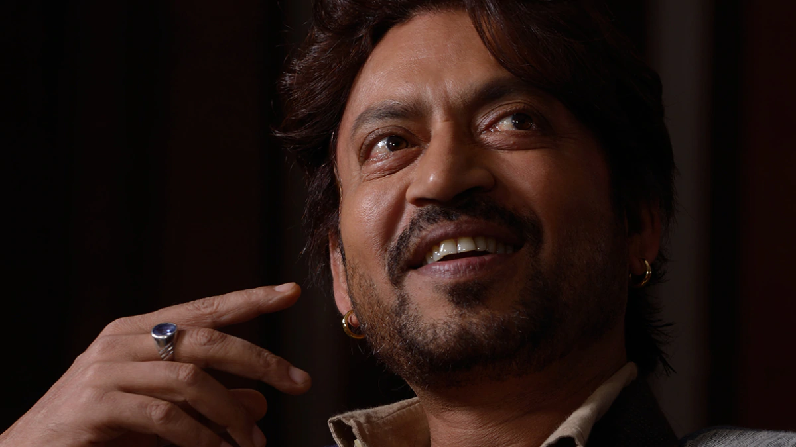

Irrfan Khan
Izzat aur zillat aap ke haath mein nahin hain!!!

(7th January 1967 - 29th April 2020)
About him
- An Indian actor who worked in Hindi cinema as well as British and American films.
- Khan made his film debut with a small role in Salaam Bombay! (1988), which was followed by years of struggle.
- Khan was born on 7 January 1967 in Rajasthan into a Muslim family of Pathani ancestry.
- Irrfan was good at cricket and was selected to play in the CK Nayudu Trophy for emerging players in the under-23 category, a tournament seen as a stepping stone to first-class cricket in India. However, he did not attend as he could not afford travel expenses.